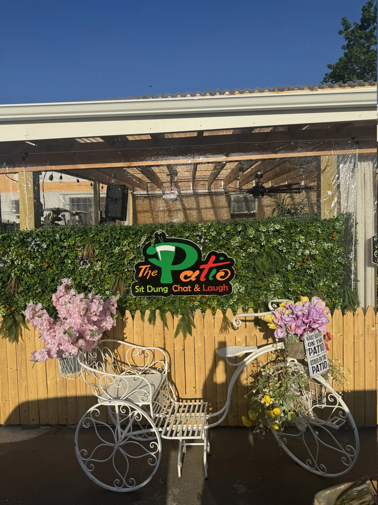

Drinks worth meeting over
Bright, easygoing cocktails made for afternoons that roll into evenings.

Main Street · Hartford, Connecticut
Good drinks, garden energy, live sounds and a little friendly competition—all under one roof and one open sky.
Stay awhile
The Patio is where laid-back afternoons turn into unforgettable nights.
Enjoy handcrafted cocktails in our indoor-outdoor garden lounge, experience live entertainment, or challenge your friends to mini golf. Designed to be welcoming, stylish, and comfortable, The Patio is the perfect place to relax, connect, and make lasting memories.
Come find us on Main StreetOur story
Welcome to
A young African American entrepreneur with a big idea for Hartford, Kayan opened The Patio a year ago to create the kind of place she wanted to see in her community.
Her hope was simple: build a friendly neighborhood hangout where people could connect, laugh, and feel at ease—and especially a safe, welcoming space where women could relax and have a genuinely good time.
Today, that vision lives in every garden corner, shared drink, round of mini golf, and night that turns strangers into friends.
Come spend some time
More than a bar
Bright, easygoing cocktails made for afternoons that roll into evenings.
Intimate performances, DJ nights and community events with real energy.
Our compact putting green brings an extra reason to stay for one more round.


A corner for every mood
Find a seat in the sun, settle into a garden corner, and stay as long as the conversation lasts.
Your moment, our space
Birthdays, listening parties, pop-ups, private dinners and intimate performances all feel at home here.
Book the space